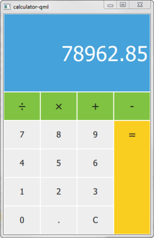

SCXML Calculator
An application that implements the Calculator example presented in the SCXML Specification.

Calculator uses Qt SCXML to implement the Calculator Example presented in the SCXML Specification.
The state machine is specified in the statemachine.scxml file and compiled into the CalculatorStateMachine class. The user interface is created using Qt Quick.
Running the Example
To run the example from Qt Creator, open the Welcome mode and select the example from Examples. For more information, visit Building and Running an Example.
Instantiating the State Machine
We make the generated CalculatorStateMachine class available to QML by declaring it as a QML type in the calculator-qml.h file:
struct CalculatorStateMachineRegistration { Q_GADGET QML_FOREIGN(CalculatorStateMachine) QML_NAMED_ELEMENT(CalculatorStateMachine) QML_ADDED_IN_VERSION(1, 0) };
We instantiate a CalculatorStateMachine and listen to the updateDisplay event. When it occurs, we change the text on the calculator display:
CalculatorStateMachine {
id: statemachine
running: true
EventConnection {
events: ["updateDisplay"]
onOccurred: (event)=> resultText.text = event.data.display
}
}
When users press the calculator buttons, the buttons submit events to the state machine:
Button {
id: resultButton
x: 3 * width
y: parent.height / 5
textHeight: y - 2
fontHeight: 0.4
width: parent.width / 4
height: y * 4
color: pressed ? "#e0b91c" : "#face20"
text: "="
onClicked: statemachine.submitEvent("EQUALS")
}